东京 + 伊豆跨年行 · 定版详细行程
定版要点：12/31 住品川一带（落地只睡觉，可选轻量跨年）→ 1/1 踊り子号南下伊东、连住 2 晚 → 1/2 大室山 + 城崎海岸徒步 → 1/3 上午回东京、下午购物 + 涩谷 SKY 日落 → 1/4 上午须贺神社《你的名字》楼梯打卡、下午飞北京。购物集中在最后一天半，不拖行李换城。
行程路线图
逐日详细行程
12/31 周四 · 抵达 + 跨年夜（住品川一带）
- 21:30 落地羽田。出关约 40 分钟，京急线 13 分钟到品川，23:00 前后到酒店，行李放下、人落地
- 可选轻量跨年（不累才去）：山手线 2 站到浜松町，吃一碗跨年荞麦面 → 沿芝公园散步，远观东京塔亮灯 → 零点前后回酒店。除夕夜 JR 通宵运行，不怕没车；累了就直接睡，不勉强
- 这一晚只解决睡觉，酒店选品川站步行圈内的 3 人房（见住宿一节）
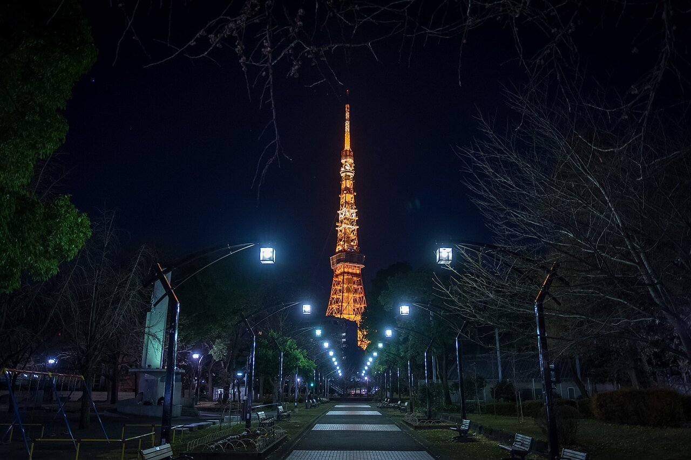
1/1 周五 · 睡到自然醒，南下伊东（住伊东 · 第 1 晚）
- 上午 睡到自然醒，品川站附近吃个悠闲早午餐；大箱子可以先宅急便寄去伊东旅馆，或随车带走（踊り子号有行李架）
- 中午 品川站乘踊り子号南下（全车指定席，约 1 小时 30 分）：右手边是相模湾海岸线，热海之后一路贴海走
- 约 13:00 到伊东站。先去旅馆放行李，下午二选一轻松版：小室山缆椅上山顶环步道（约 40 分钟，看海和伊豆大岛）或伊东海岸/橘子之路散步
- 傍晚 回住处休息；若住带私汤的，入住时先把包场风吕时段约好
- 晚餐 伊东名物金目鲷：红烧（煮付け）或涮涮锅，配伊豆地酒/静冈麦酒。元旦晚上开门的店不多，且 かめや楽寛 在售为素泊まり — 餐厅要提前订位
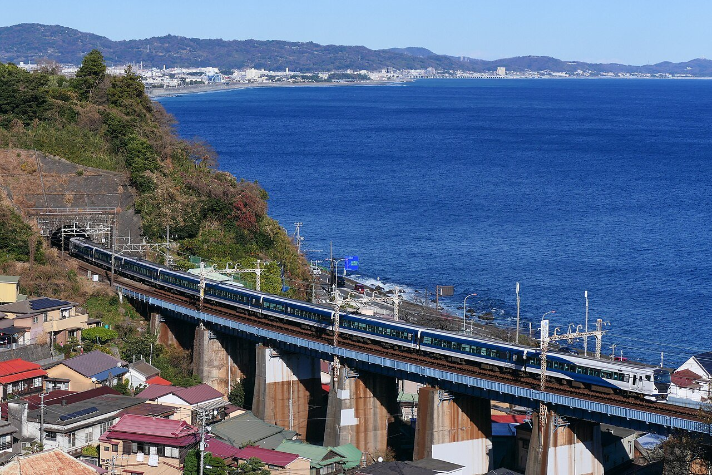
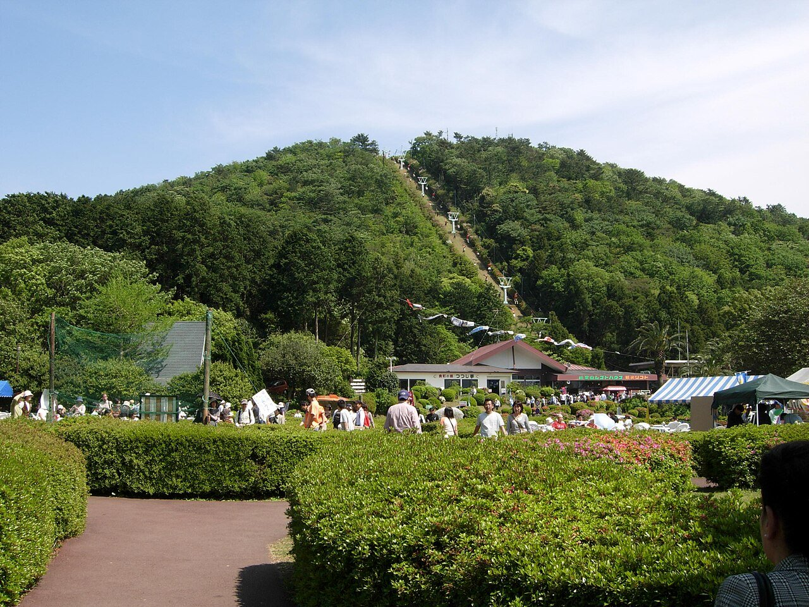
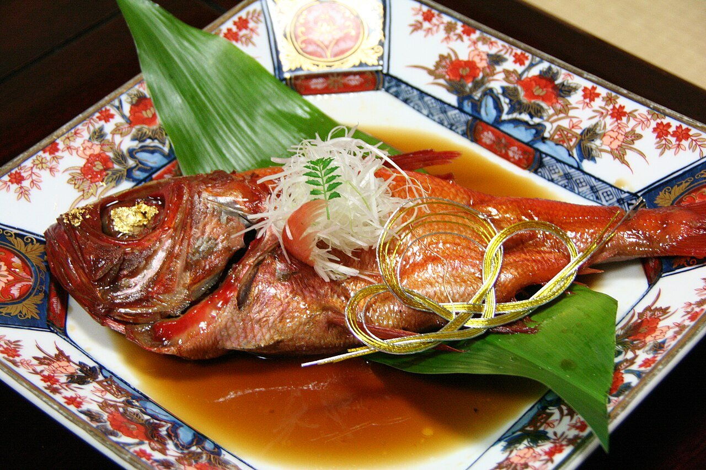
1/2 周六 · 大室山 + 城崎海岸徒步（住伊东 · 第 2 晚）
- 09:00 前 到大室山（伊豆高原，缆椅上山）：山顶火山口环形步道约 1 公里、40 分钟走完，碗状火山口 + 富士山 + 相模湾同框。1 月是全年看富士山概率最高的季节；山是枯色（绿色要 5 月后），胜在视野。缆椅 9 点开门即到，避开 20–30 分钟排队
- 中午 伊豆高原站周边午餐（海鲜丼或荞麦面）
- 下午 城崎海岸徒步：门胁吊桥 → 半四郎落し → 桥立吊桥，约 5 公里 / 2.5–3 小时。柱状节理悬崖 + 松林 + 海蚀洞，是伊豆东海岸最精华的一段；只背小包，大行李留在旅馆
- 傍晚回旅馆 泡汤、晚餐；晚上可选 伊豆 Gran Illumi 灯光秀（伊豆高原，打车往返）


1/2 唯一要拍板的小分叉：伊豆仙人掌动物园的水豚泡汤是冬季限定（今年季 2026-11-21 至 2027-04-04，假期场次 10:30 与 13:30）。13:30 场会切掉城崎海岸的后半段。二选一：徒步完整版（大室山+城崎全程）或水豚版（上午大室山 → 13:30 水豚 → 城崎只走门胁吊桥精华段）。
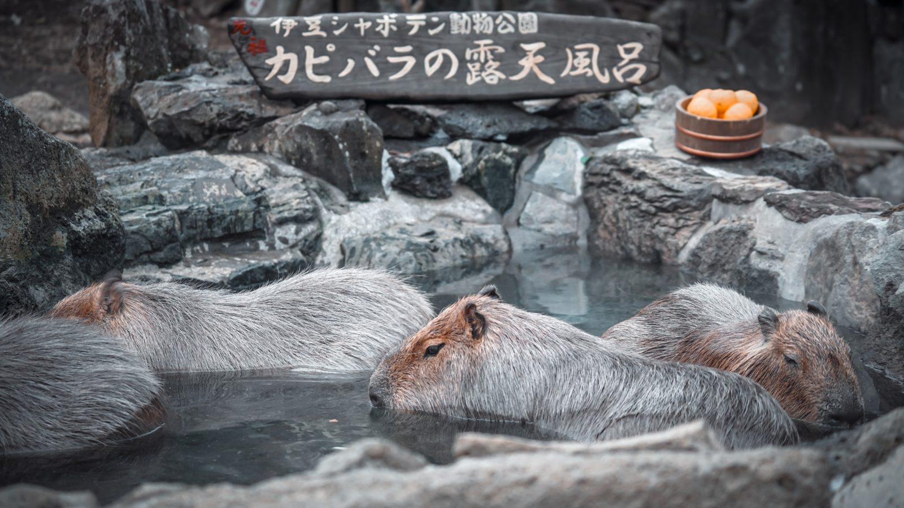
1/3 周日 · 回东京：购物 + 涩谷 SKY 日落（住东京）
- 上午 睡个懒觉，10 点前后乘踊り子号北上（避开下午返程最高峰），约中午到东京，先去酒店放行李
- 下午 新年初卖购物：银座（旗舰店+百货福袋）或涩谷（年轻品牌+杂货），买完直接回酒店放下 — 所有购物都集中在这一天半，不拖着走
- 16:00 左右 涩谷 SKY 入场：230 米露天屋顶，一张票连看日落（约 16:35）→ 蓝调时刻 → 夜景。票只提前 14 天开售，12 月 20 日 00:00（日本时间）抢 1/3 的日落场，15:00 后入场票人民币 142/人（日元 3,400），入场带护照
- 晚上 涩谷/银座附近晚餐，早点休息
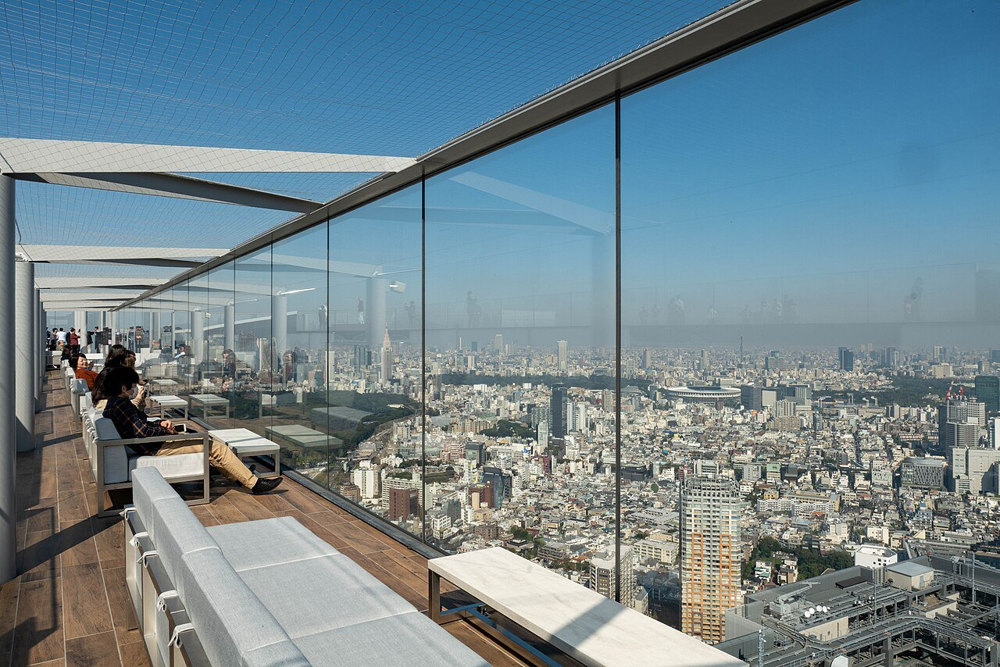
1/4 周一 · 须贺神社打卡 + 回程
- 上午 睡到自然醒，退房寄存行李后去四谷须贺神社：只在参道那段红扶手楼梯拍照（《你的名字》结尾重逢的楼梯），不参拜，约 30 分钟。1/4 人潮已散，不用排队
- 11:00 前 回酒店取行李，最后补一轮伴手礼（东京站/机场）
- 12:00 出发去羽田（品川出发京急 13 分钟；若住银座/涩谷预留 40 分钟）
- 15:00 东京飞北京（以出票时间为准）
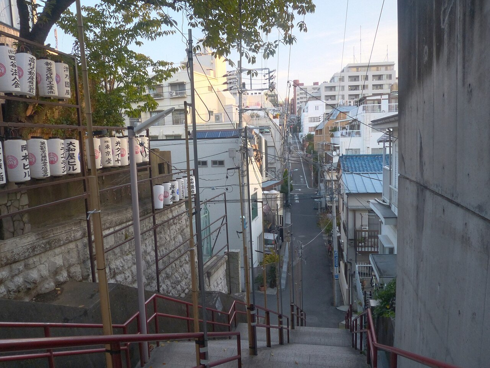
住宿方案（3 位成人 · 干净优先）
Airbnb 整套（伊豆高原 / 伊东）
| 房源 | 2 晚总价 | 要点 |
|---|---|---|
| Cozy OceanView House（伊豆高原） ⭐4.91 · 303 条评价 · 超赞房东 |
人民币 6,420（日元 153,300） |
私汤最正的一家：桧木浴池引天然温泉水，评价里多人夸室内温泉+海景。1 大床+被褥充足，3 人绰绰有余；厨房、洗衣机都有。缺点：山坡上，离伊豆高原站开车 5 分钟，没车要打车；本组最贵
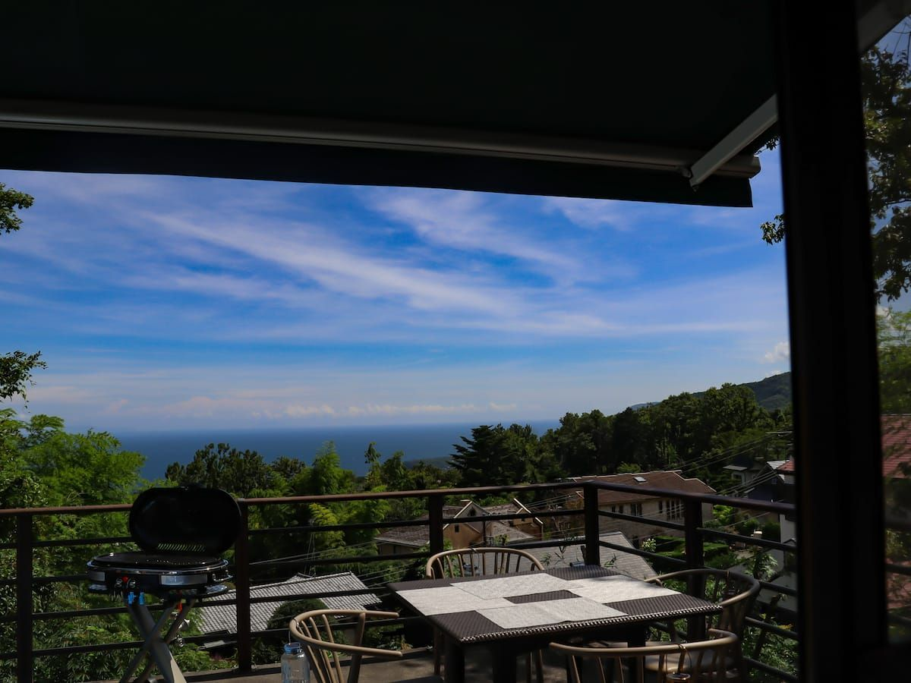 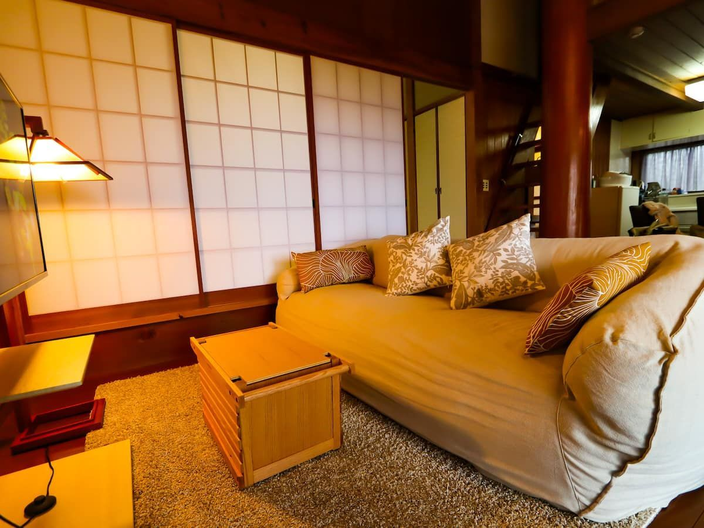 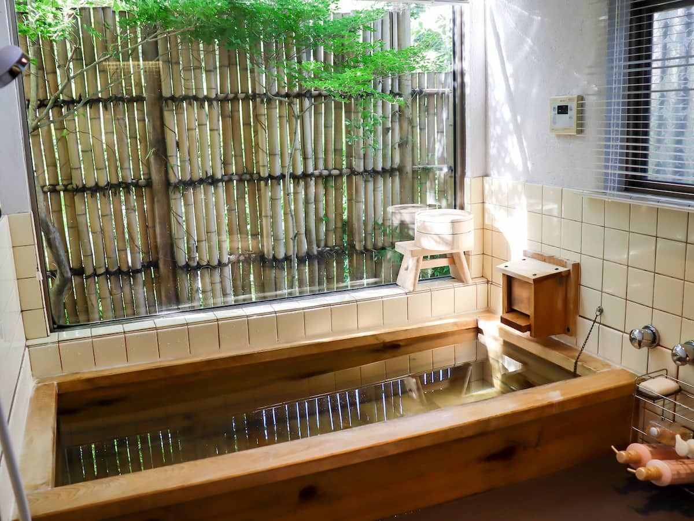 ▲ 实拍：海景露台（带烧烤炉）/ 木质客厅 / 桧木温泉浴池 |
| Oceanview Deck Lodge（热川方向） ⭐4.95 · 258 条评价 · 清洁 4.9 |
人民币 2,970（日元 70,900） |
性价比最高：木甲板上的私人露天浴池看海，90 条评价专门夸干净。3 张单人床+和室被褥。缺点：浴池未确认是天然温泉水（按露天热水池看待）；离车站开车 15–25 分钟，必须有车
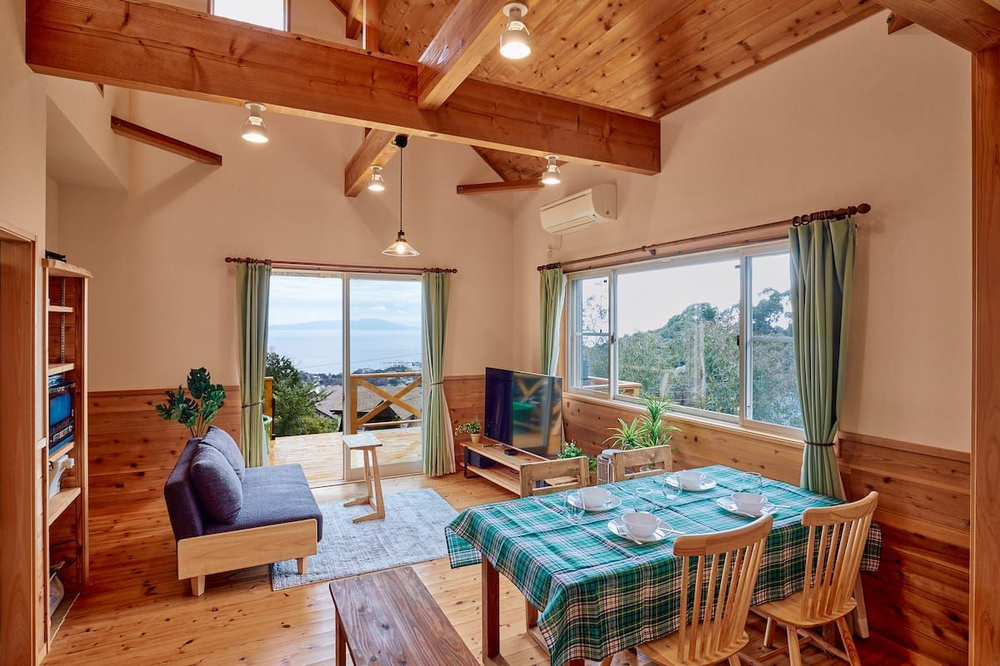 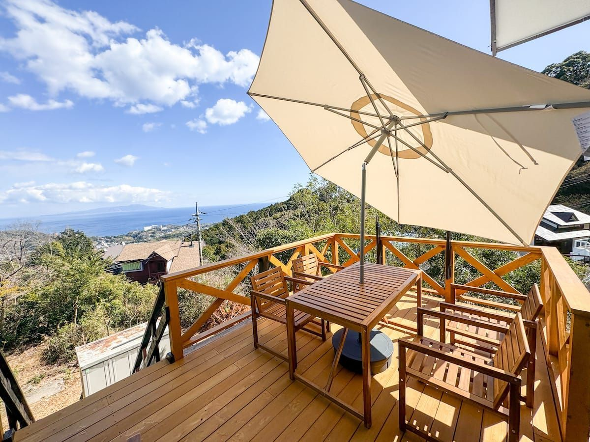 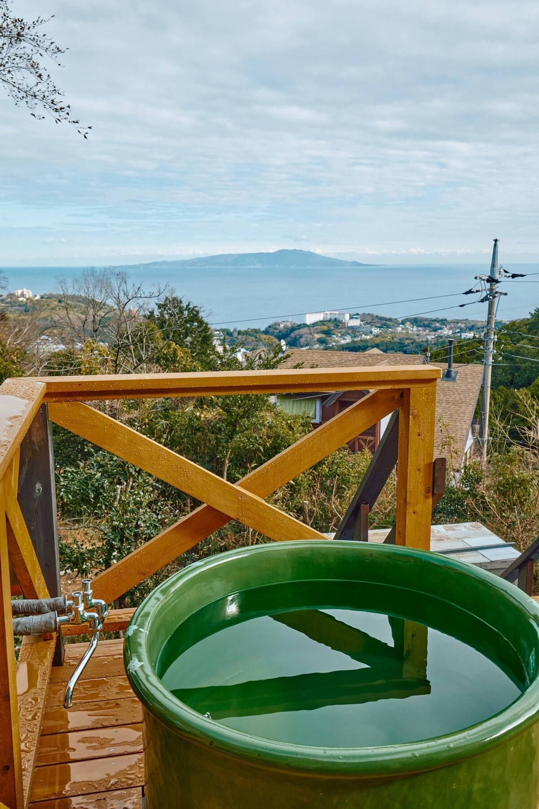 ▲ 实拍：挑高客厅餐厅（落地窗外就是海）/ 海景木甲板 / 甲板上的露天浴池（对面是大岛） |
| Izu Private Villa（伊豆高原） ⭐4.94 · 仅 31 条评价 · 清洁 4.9 |
人民币 4,190（日元 100,000） |
天然温泉（对马温泉源泉）+森林甲板，每天 3 班免费接送伊豆高原站，不用自己开车也能住。缺点：评价数少（新房东 7 个月），且位于土砂灾害警戒区边缘 — 列为备选 |
| Usami Seaside [201]（宇佐美） ⭐4.95 · 169 条评价 · 清洁 4.9 |
人民币 2,640 起（日元 63,000） | 无车最友好：宇佐美站步行 5 分钟，坐 1 站到伊东；海滩步行 1 分钟，新评价都夸宽敞干净。缺点：没有温泉，只有普通浴缸 — 泡汤要去外面日归温泉
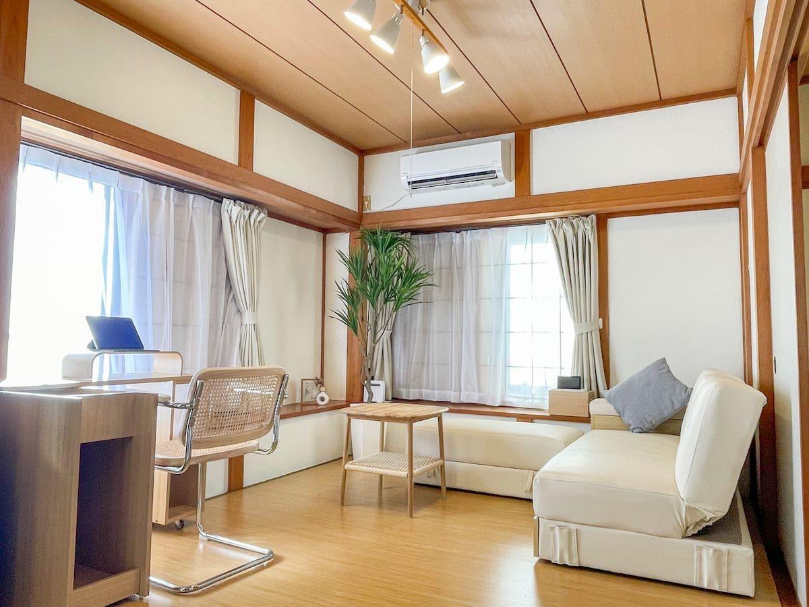 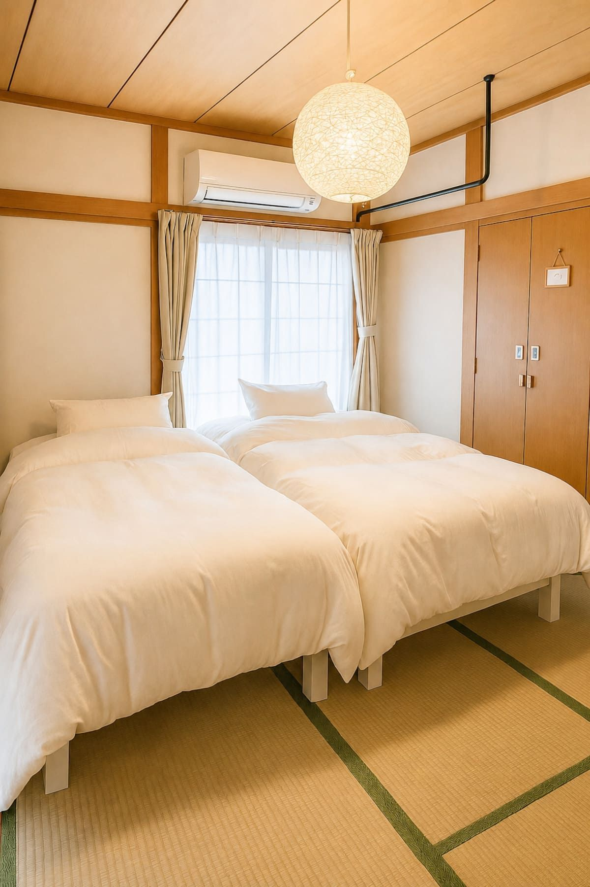 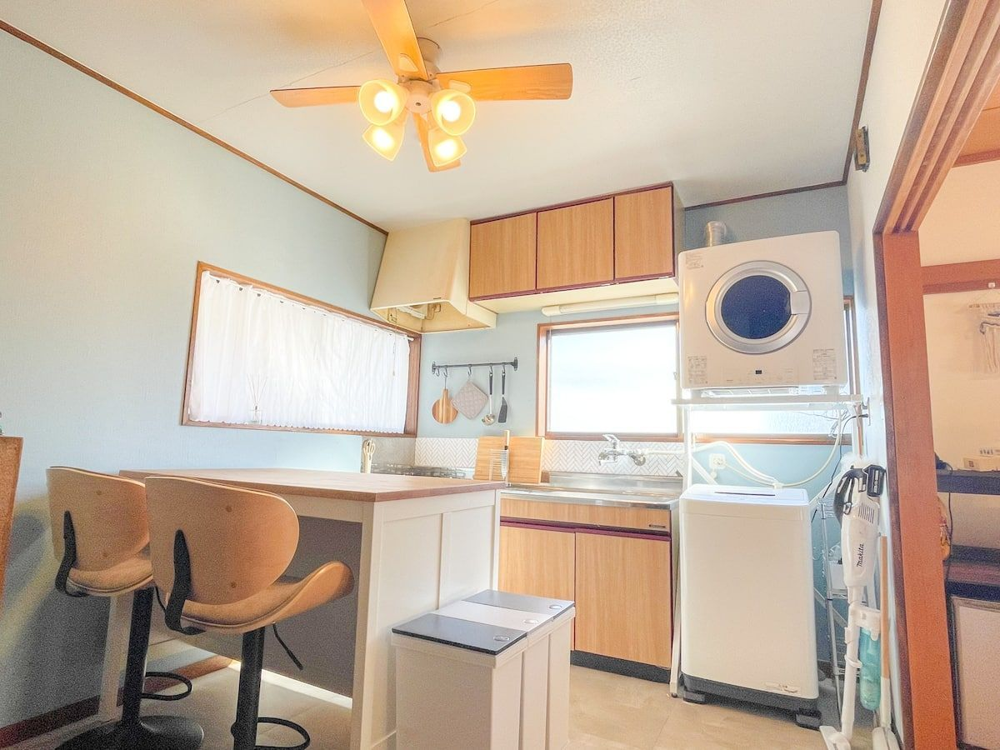 ▲ 实拍：明亮的客厅 / 榻榻米卧室（两张正经床）/ 厨房带洗烘一体机 |
| Kuragean Miyakawa（宇佐美） ⭐4.86 · 223 条评价 · 清洁 4.9 |
人民币 2,520（日元 60,200） |
最便宜：整层出租、离海滩 30 秒、步行 10 分钟有日归温泉。缺点：全被褥没有床；房东住楼上（独立入口）；22 点后室外要安静 |
别墅派的共同前提：伊豆高原的房子都在山坡上，景点之间靠巴士班次稀疏。选 #1/#2 等于默认打车或租车（伊东站租车 2 天人民币 630–1,050（日元 15,000–25,000），另算）；选旅馆则全程电车+步行。这一点和下面的旅馆方案一起拍板。
旅馆派（伊东站旁，全程电车+步行）
かめや楽寛（Kameya Rakan）— 3 人实查后唯一全达标的一家（伊东站步行 3 分钟）
海侧 10 叠和室（3 套被褥入住前铺好），素泊まり（不含餐），含 1 次 45 分钟包场露天风吕（4 种包场池任选，可容 3 人；另有免费家庭风吕先到先得）：
海侧 10 叠和室（3 套被褥入住前铺好），素泊まり（不含餐），含 1 次 45 分钟包场露天风吕（4 种包场池任选，可容 3 人；另有免费家庭风吕先到先得）：
- 人民币 4,010（日元 95,760） — Jalan 限时价（须在 11 月 30 日前订），2 晚含税，余房 10 间以上
- 人民币 4,220（日元 100,800） — 同房型常规价；人民币 4,470（日元 106,800）为含 2 次包场版
- 取消：12 月 24 日前免费，之后按 20%→100% 递增；入汤税口径不一致，最多另备人民币 75（日元 1,800）现金
- 口碑：Jalan 4.4（4,327 条），清洁 4.1 — 没有卫生红旗，但也不是新酒店；包场风吕是翻新过的，风吕评分 4.5
- 不含餐：晚餐在镇上吃金目鲷（元旦要提前订位），早餐站前解决 — 对我们反而自由
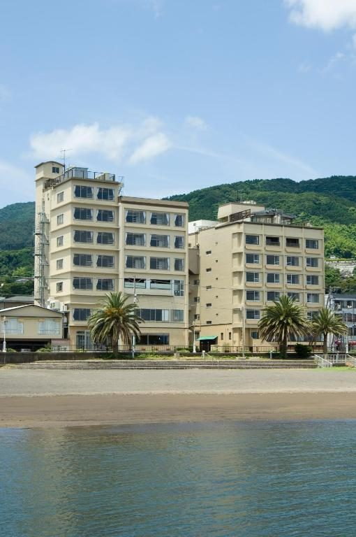
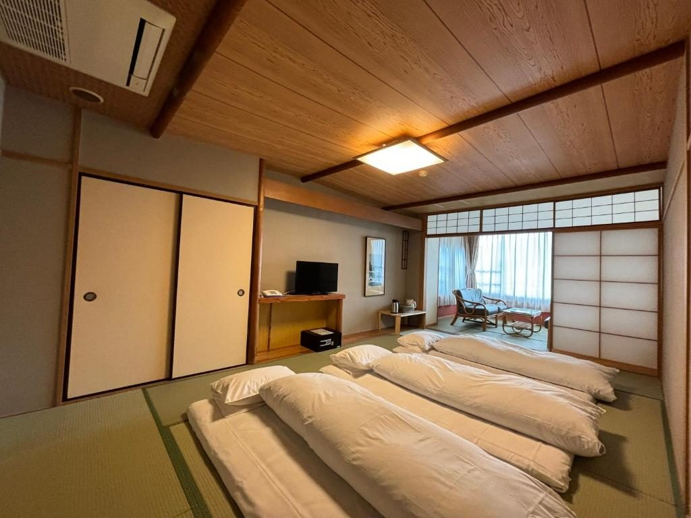
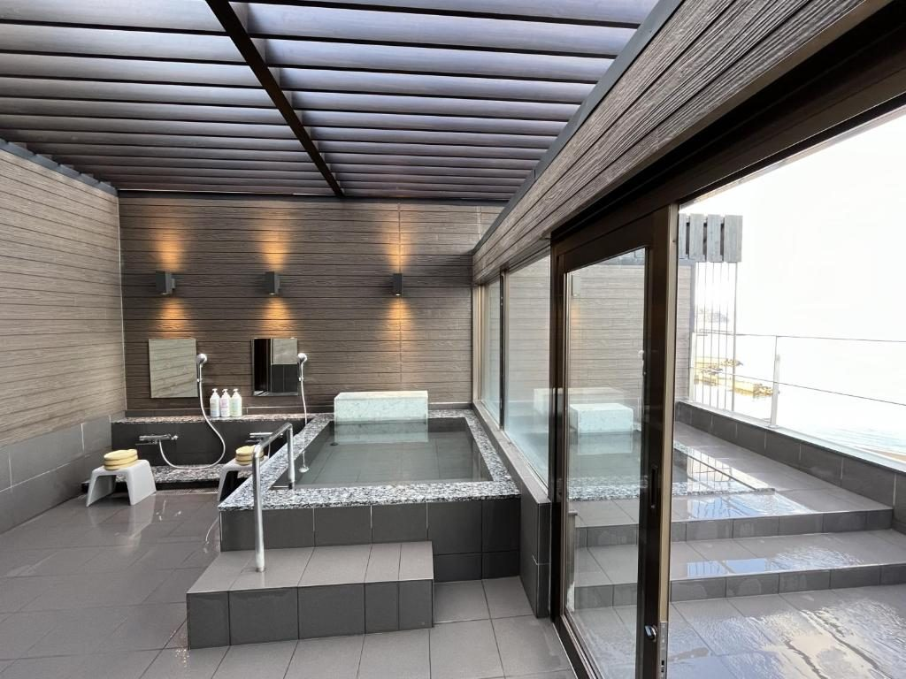
▲ かめや楽寛 实拍：海侧外观 / 和室铺 3 床的样子 / 包场露天风吕（室内池+露天池，玻璃外就是海）口碑之王（无温泉硬要求后新增）：K's House 伊东温泉 — 百年历史建筑旅馆（注册文化财产），Booking ⭐9.3、清洁 9.2、员工 9.6，伊东站步行 9 分钟。3 人和室三人间 2 晚 人民币 4,490（日元 107,100）（含税）。馆内有温泉（公共+包场都有）。缺点明确：共用浴室、不可退款（可改期）、20:30 锁门。适合「口碑和氛围优先、能接受共用浴室」的选法。
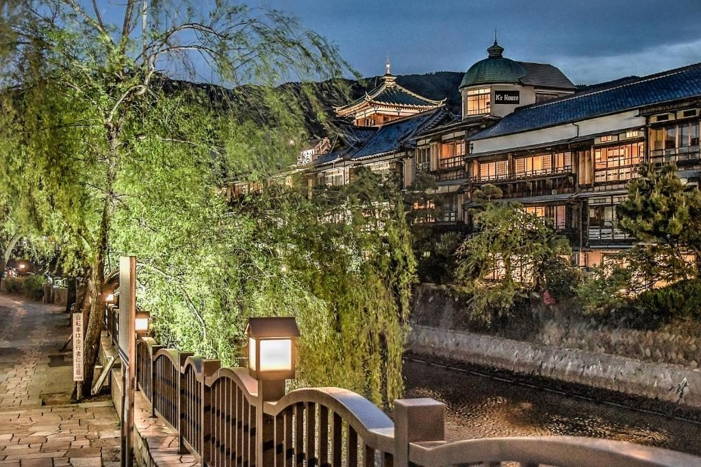
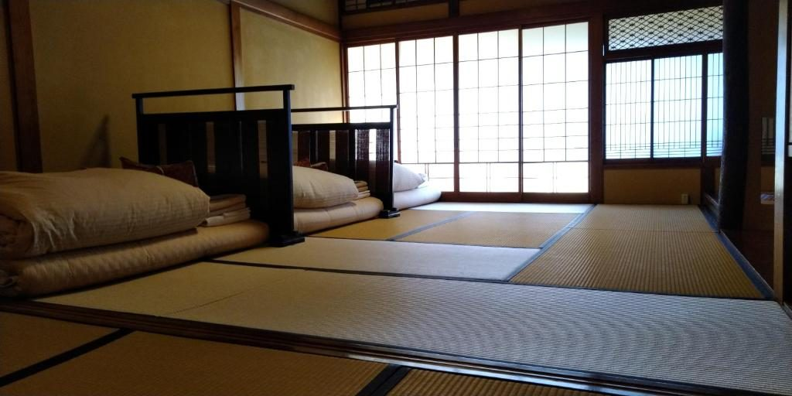
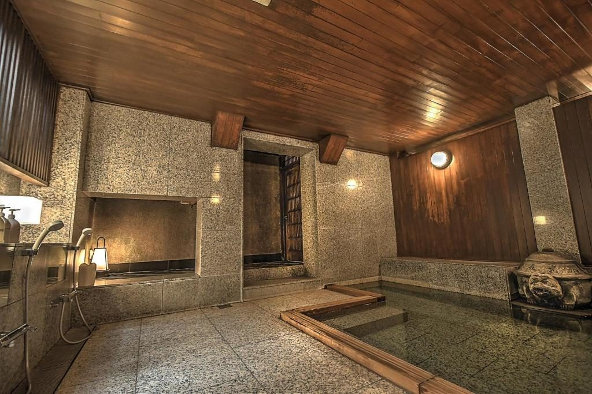
▲ K's House 实拍：松川河畔的百年木楼夜景 / 榻榻米和室 / 石造温泉浴池其他旅馆全灭（1/1 入住的瓶颈）：伊东游季亭、Laforet 汤之庭、青山やまと、风之薰 UMI 等 1/1–1/3 全部售罄或候补；伊东 Hotel 聚乐有房但人民币 13,850（日元 330,600），超预算 2 倍且可订房型没有包场风吕。所以旅馆派实际只有 かめや楽寛 一个选项 — 好消息是它价格、位置、私汤全达标。
东京两晚（3 人实查，2026-11-20）
| 日期 / 酒店 | 总价 | 要点 |
|---|---|---|
| 12/31 田町 相铁 Fresa Inn 东京田町 ⭐8.5 · 清洁 8.9 · 位置 9.1 |
人民币 2,841（日元 67,800） |
综合最稳：田町站步行 5 分钟，山手线 2 站到品川（第二天坐踊り子号方便）、1 站到浜松町转单轨去羽田。评分、清洁、位置三项都在线 |
| 12/31 品川 Smile Hotel 品川泉岳寺站前 ⭐8.5 · 清洁 8.9 · 员工 9.3 |
人民币 2,994（日元 71,448） |
交通最优：泉岳寺站步行 3–4 分钟，京急 1 站到品川、且直达羽田（落地当晚最省事）。注意：这是 Booking Genius 会员价（免费注册即可），且贴着 3,000 上限，涨价就出局 |
| 12/31 户越 APA 品川户越站前 ⭐8.1 · 清洁 8.6 |
人民币 2,759（日元 65,850） |
户越站步行 1 分钟，旁边就是户越银座商店街；去品川两站一换乘（经泉岳寺）。价格比 Fresa 再便宜一点，位置稍偏 |
| 12/31 新桥 APA 新桥御成门 ⭐7.8 · 清洁 8.4 |
人民币 2,936（日元 70,080） |
跨年夜最方便：芝公园/东京塔就在步行圈里，放下行李出门看塔不用坐车；浜松町步行 10 分钟转单轨去羽田。代价：评分是这组里偏低的 |
| 12/31 品川 FLEXSTAY INN 品川 ⭐7.7 · 清洁 8.1 |
人民币 2,672（日元 63,780） |
全场最便宜，北品川站步行 2 分钟。但前台只到 22:00，你们约 23 点才到 — 订前必须先联系酒店确认深夜入住安排，确认不了就排除；另无电梯、不含每日打扫 |
| 1/3 涩谷 Cerulean Tower 东急 ⭐9.2 · 清洁 9.5 |
人民币 5,370（日元 128,149）（可取消） 人民币 3,380（日元 80,706）（不可退） |
品质最佳：清洁分全场最高，涩谷站步行 5 分钟，去 SKY 步行可达。不可退价便宜近 5 万，但行程已定版的话可以考虑
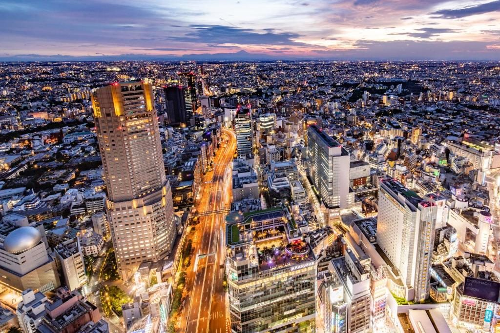 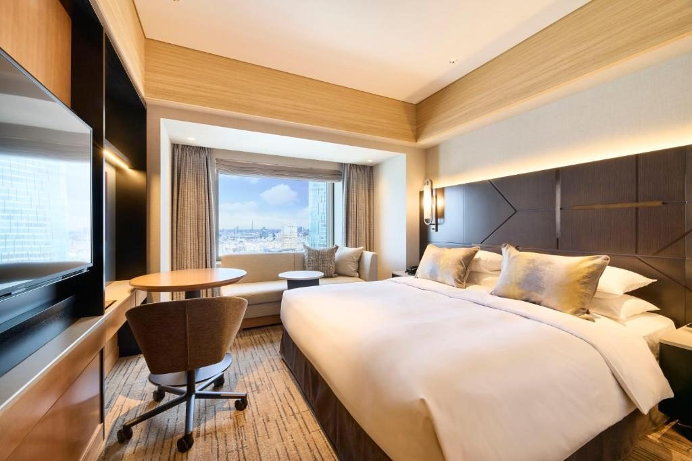 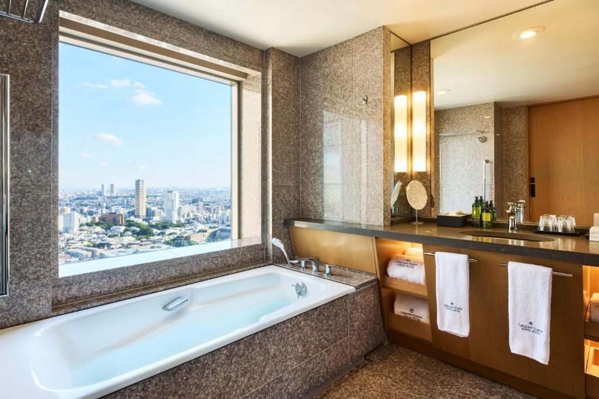 ▲ 实拍：Cerulean Tower 与涩谷黄昏 / 高层客房 / 带景观大窗的浴室 |
| 1/3 涩谷 涩谷 Excel 东急 ⭐8.9 · 清洁 9.2 · 车站直结 |
人民币 3,740（日元 89,147） |
无三人间，2 间房组合（单人间+双人间）；就在涩谷站楼上、SKY 步行 5 分钟，位置无敌 |
| 1/3 银座 三井花园银座 Premier ⭐8.4 · 清洁 8.7 |
人民币 3,290（日元 78,406） |
房间最大（40㎡ 大床房），银座购物最方便；但第 3 人怎么睡要订前确认（该店不提供加床），且去涩谷 SKY 要坐一段电车 |
| 1/3 银座 Hotel Gracery 银座 ⭐8.0 · 清洁 8.2 |
人民币 1,180（日元 28,280） |
价格断层最低：3 张单人床的真三人间，银座站 2–3 分钟。代价：23㎡ 三人偏挤、清洁分全场最低 — 和「干净优先」有冲突，只列作预算备选 |
我的倾向：12/31 只睡一晚、别为它花大钱 — 相铁 Fresa Inn 田町（均衡）或 Smile 泉岳寺（交通最优，但要 Genius 价且贴上限）；想把跨年夜出门看塔做到最省事就选 APA 御成门。1/3 选 Cerulean Tower（SKY 步行可达 + 清洁 9.5），预算敏感就 Excel 2 间。银座两家适合把购物重心放银座时选。
抢票与订票时间点
- 酒店：选定就订 — 新年档房源只减不增，Airbnb 好房源同理
- 12 月 1 日 10:00（日本时间）：1/1 南下踊り子号指定席开售（3 张连座）
- 12 月 3 日 10:00（日本时间）：1/3 回东京车次开售（返程最高峰日）
- 12 月 20 日 00:00（日本时间）：涩谷 SKY 1/3 门票开售，抢 16:00 前后日落场
还剩两个小拍板
- 伊东住宿：かめや楽寛 Booking 版（人民币 3,040，日元 72,622，最划算）/ Jalan 版（人民币 4,010，日元 95,760，含私汤+海景）/ K's House（人民币 4,490，日元 107,100，口碑最佳）/ Airbnb 别墅（人民币 2,970–6,420）— 见住宿一节
- 1/2 水豚 vs 徒步完整版：见 1/2 的提示框